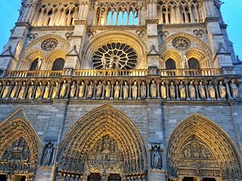
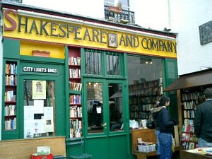

Explorez Paris


La Ville Lumière éblouit en tous points
Aucun autre endroit au monde ne fait autant rêver que Paris. La ville séduit par son art, son architecture, sa culture et sa cuisine, mais il y a aussi des merveilles plus discrètes qui n’attendent qu’à être explorées : les ruelles pavées pittoresques, les pâtisseries au coin de la rue et les petits bistrots douillets qui vous invitent à boire un verre de beaujolais. Préparez-vous à vous approprier Paris.
Paris : commencez à organiser
Créez un voyage pour enregistrer et organiser toutes vos idées et les visualiser sur une carte.

Paris : les immanquables
Se divertir
Des lieux à voir, des rues à explorer et des expériences emblématiques à Paris.
Tout afficher
Tour Eiffel
140 249

Musée du Louvre
100 864

Arc de Triomphe
45 099
Musée Rodin
12 456

Cathédrale Notre-Dame de Paris
71 250

Librairie Shakespeare and Company
3 920
Musée d'Orsay
65 761

Marché aux Puces de Saint-Ouen
864

Basilique du Sacré-Coeur de Montmartre
38 637

Jardin des Tuileries
7 523


 Michelin 2021
Michelin 2021